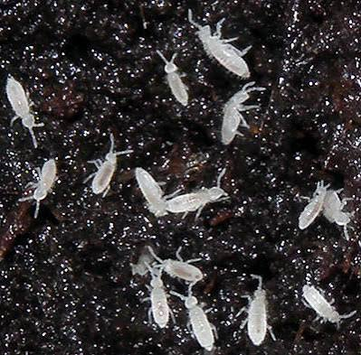
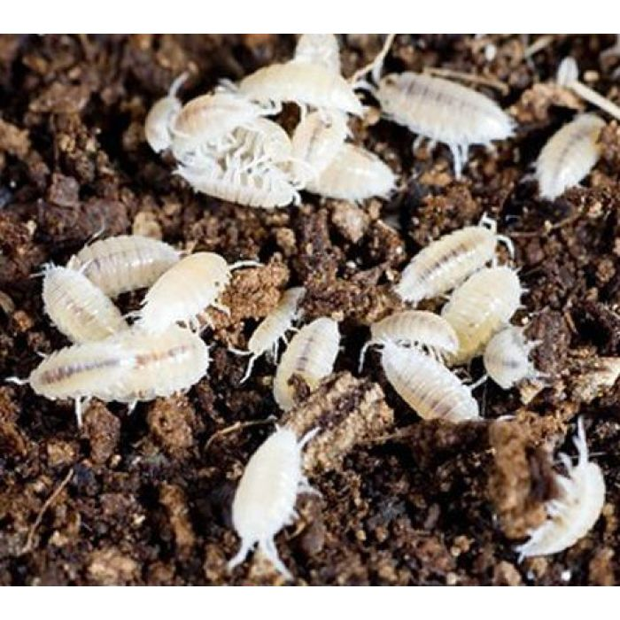
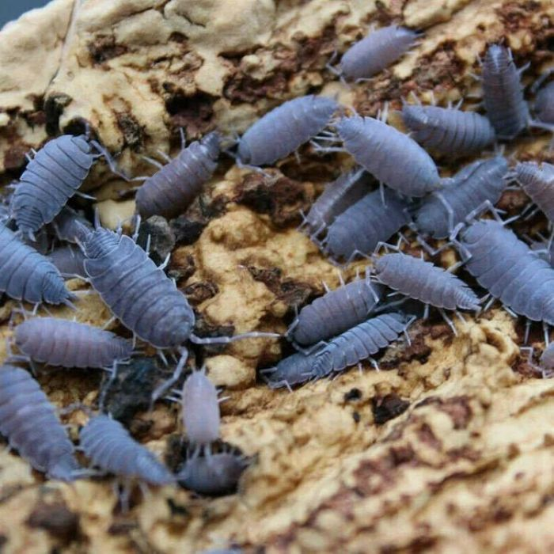

Ecosistema Bioattivo
Come un micro-mondo si mantiene sano e pulito senza interventi invasivi.
Cosa significa "Bioattivo"?
Un terrario bioattivo non è una semplice teca arredata, ma un ecosistema vivo e funzionante. Rifiuti organici, frammenti vegetali e deiezioni vengono riciclati naturalmente attraverso una catena trofica miniaturizzata. In questo sistema circolare, minuscoli artropodi (detti Clean Up Crew, o CUC) si nutrono dei rifiuti organici, trasformandoli in nutrienti per le piante. Al tempo stesso gli esemplari di taglia più grossa rappresentano la principale fonte di cibo per i predatori apicali presenti nel terrario.
La Squadra di Pulizia (CUC)
1. Collemboli tropicali (Folsomia candida)
Microartropodi millimetrici che si nutrono di spore fungine e muffe. Pur non venendo predati dagli scorpioni per via delle dimensioni ridotte, impediscono la proliferazione di marciumi nel substrato umido e costituiscono un anello fondamentale per la salute delle radici. La riproduzione per partenogenesi rende molto rapida e capillare la colonizzazione di tutto il terrario. Proliferano in terreni umidi ed è possibile vederli all'interno del substrato, prestando attenzione a piccoli puntini bianchi che si muovono.

2. Onischi nani tropicali (Trichorhina tomentosa)
Minuscoli crostacei di terra specializzati nella degradazione della cellulosa e della materia organica grossolana. Consumano la lettiera di foglie morte e il legno in decomposizione, restituendo sali minerali al terreno e contribuendo a tenere il terrario pulito da muffe. Si riproducono per partenogenesi e possono rappresentare una fonte di cibo per gli scorpioni neonati. Si possono osservare specialmente di notte mentre si muovono nella lettiera di foglie.

3. Isopodi "Powder Blue" (Porcellionides pruinosus)
Crostacei di terra di taglia media, estremamente attivi e caratterizzati da una tipica pruina cerosa grigio-azzurra. Svolgono un ruolo fondamentale come spazzini del substrato, decomponendo rapidamente residui vegetali, feci e frammenti organici complessi. A differenza delle specie nane sono molto rapidi e colonizzano la superficie, rappresentando la preda principale per gli scorpioni adulti e subadulti. Richiedono una fonte costante di foglie secche e un minimo apporto proteico supplementare per evitare che disturbino gli scorpioni durante le fasi più delicate, come la muta.

4. Pesciolini delle case (Thermobia domestica)
Piccoli insetti primitivi privi di ali, parenti dei pesciolini d'argento comuni. Estremamente agili e amanti dei microclimi caldi e riparati. Con il loro esoscheletro morbido e l'intensa attività notturna, rappresentano una preda viva ideale e stimolante per gli scorpioni di ogni età, senza costituire alcun pericolo di aggressione per gli ospiti del terrario, neppure durante le fasi di muta. Richiedono temperature elevate per la riproduzione e non possono dunque riprodursi nel terrario. Vanno quindi aggiunti regolarmente, pur potendo sopravvivere per diverse settimane.